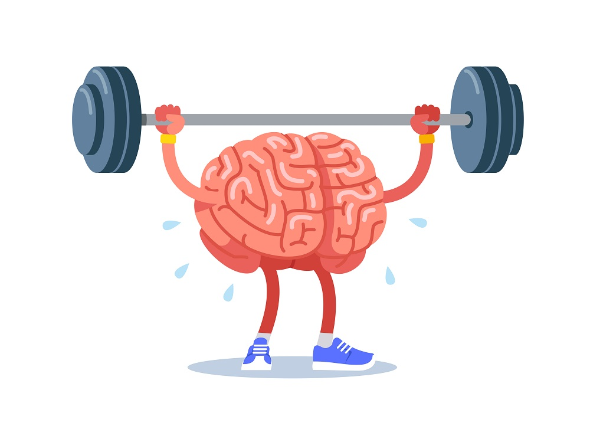

A healthy lifestyle can help you thrive throughout your life.
Making healthy choices isn't always easy. It can be
hard to find the time and energy to exercise regularly or
prepare healthy meals. However, your efforts will pay off
in many ways, and for the rest of your life.
The Benefits of Healthy Eating
Eating a healthy diet has many health benefits including maintaining optimal weight,
preventing disease, and boosting your mood.
In general, healthy eating starts with making good food choices. A healthy diet includes
nutrient-dense foods from all major food groups including lean proteins, whole grains,
and healthful fats, and eliminating or significantly reducing processed foods.
Healthy Weight
Maintaining a healthy weight can help reduce the risk of many chronic health issues. Being overweight or obese, however, significantly increases your chances of serious diseases, including:
- Heart disease
- Some cancers
- Type 2 diabetes
- Osteoporosis
Additional healthy eating tips for maintaining a healthy weight include:
- Plan your healthy meals: This reduces your chances of making poor choices or binge eating.
- Know how much you eat: It is very easy to consume more calories than you realize.
- Vary your vegetables: By eating different vegetables, you may feel more satisfied.
- Use herbs and spices: These ingredients add flavor without significantly increasing calories.
- Read the nutrition facts labels: Know precisely what's in the foods you eat.
Better Mood
 Research suggests that there may be a close relationship between diet and mood. In 2016,
researchers found that diets with a high glycemic load may trigger increased symptoms of
fatigue and depression.
Research suggests that there may be a close relationship between diet and mood. In 2016,
researchers found that diets with a high glycemic load may trigger increased symptoms of
fatigue and depression.
Foods with a high glycemic load include refined carbohydrates or simple sugars. Examples of this type of food include sugary drinks, white breads, biscuits, cookies, and cakes. Conversely, vegetables, whole fruit, whole grains and lean proteins have a lower glycemic load.
Heart Health
According to the US Center for Disease Control and Prevention, heart disease is the leading cause of death for adults in the United States. The American Heart Association reports that nearly half of all adults in the United States live with some form of heart disease.Healthy eating and increased physical activity can help prevent high blood pressure or premature heart disease. The Dietary Approaches to Stop Hypertension (DASH) diet is recommended as a dietary approach to reduce high blood pressure. This diet includes:
- Eating plenty of vegetables, fruits, and whole grains.
- Choosing fat-free or low-fat dairy products, fish, poultry, beans, nuts, and vegetable oils.
- Limiting saturated and trans fat intake, such as fatty meats and full-fat dairy products.
- Limiting food or drinks that contain added sugar.
- Restricting sodium intake to less than 2,300 milligrams per day and increasing your intake of calcium, potassium, and magnesium. Note that 1,500 milligrams of sodium per day is ideal.
Reduced Risk for Cancer
Eating foods that contain antioxidants can help reduce your risk of developing some cancers. Antioxidants help protect our bodies cells from damage by removing free radicals, which can cause disease.Fruits, vegetables, nuts, and legumes contain many phytochemicals, which act as antioxidants.
Improved Memory
Research suggests that a healthy diet might protect against cognitive decline. In one particular study, vitamin D, vitamin C, vitamin E, omega fatty acids, fish, polyphenols, and flavonoids were all considered beneficial. The healthy eating suggestions previously recommended in this article also impart improved memory benefits. Many healthy diets have certain characteristics in common:
- Eat more vegetables
- Eat fruit
- Eat whole grains
- Include nuts and seeds
- Choose good fats
- Eat lean protein